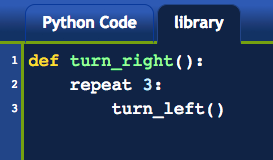
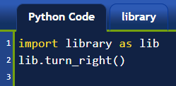

6. Autres méthodes de saisie(entrée/input) (easygui_qt)¶
Aperçu rapide de la journée
Obtenir les entrées de l’utilisateur avec une fenêtre contextuelle à l’aide du module easygui_qt. Travaillez sur un projet Python, axée sur les entrées/sorties de chaînes et les conditions.
- CS20-CP1 Apply various problem-solving strategies to solve programming problems throughout Informatique 20.
- CS20-FP1 Utilize different data types, including integer, floating point, Boolean and string, to solve programming problems.
- CS20-FP2 Investigate how control structures affect program flow.
- CS20-FP4 Investigate one-dimensional arrays and their applications.
6.1. Que fait ce programme?¶
Note
Votre enseignant peut choisir d’utiliser les exemples suivants comme activité de classe, en les affichant et en vous demandant de deviner ce que chacun fait avant d’exécuter le code.
Que vont produire les programmes suivants? Pourquoi?
Rappelez-vous qu’un seul signe égal = est utilisé pour assigner une valeur. Deux signes égaux == sont utilisés pour comparer une valeur.
Essayez le code suivant avec x = 42, x = 32, x = 2, x = 82 et x = 142.
Essayez ce qui suit en entrant 17. Ensuite 14? Peux-tu le réparer? Hint: pensez aux types de données!
6.2. Obtenir les entrées de l’utilisateur avec easygui_qt¶
Un des avantages de Thonny est la facilité avec laquelle il est possible d’ajouter des modules à l’installation standard de Python. Vous pouvez penser à un module similaire à l’onglet library que nous avons utilisé dans Reeborg. Cela nous donne la possibilité d’utiliser des fonctionnalités supplémentaires créées par un autre programmeur. Lorsque nous programmions Reeborg, nous avons souvent mis des fonctions dans l’onglet Bibliothèque, comme ceci:
Dans Reeborg, nous importions souvent ce code en utilisant from library import turn_right, de sorte que nous puissions simplement appeler la fonction turn_right() de la même manière que nous pourrions appeler turn_left(). Cependant, il était également possible d’importer la bibliothèque comme ceci:
Vous pouvez penser que ce code dit “Regardez dans la bibliothèque, et trouvez quelque chose qui s’appelle turn_right()”. Pour de nombreux modules Python, cela revient à dire “Regardez dans le fichier library.py et trouvez une fonction appelée turn_right()”.
Une autre méthode d’importation de la bibliothèque nous permet d’attribuer au module un surnom plus rapide à taper. Considérer ce qui suit:
Lorsque vous utilisez Python en dehors de Reeborg, si vous souhaitez obtenir un entrée de l’utilisateur par le biais d’une fenêtre contextuelle graphique plutôt que par le biais de la console, nous pouvons simplement installer le module cs20-easygui. Dans Thonny, ouvrez Tools -> Manage packages….
Maintenant, tapez cs20-easygui dans le champ de recherche (assurez-vous de l’épeler exactement come cela). Maintenant, cliquez sur le bouton Installer.
Note
Le paquet cs20-easygui tente d’installer easygui_qt, ainsi que ses prérequis. Si vous préférez (ou si vous rencontrez des problèmes d’installation), vous pouvez également installer chaque module individuellement. L’ordre dans lequel vous les installez devrait être sip, puis PyQt5, puis easygui_qt.
6.2.1. Obtenir la chaîne de l’utilisateur¶
Vous pourrez maintenant utiliser le module easygui_qt de la même manière que vous pouvez utiliser n’importe quel autre module. Voici un programme simple qui utilisera des fenêtres contextuelles pour obtenir le nom et le prénom de l’utilisateur, puis affichera le résultat sur la console.
# importer le module pour permettre l'interaction avec l'interface graphique
import easygui_qt as easy
# pense que cela ressemble à "regarde dans easygui_qt, et lance la fonction get_string
prenom = easy.get_string("Veuillez entrer votre prénom")
nom = easy.get_string("Veuillez entrer votre nom de famille")
salutation = "Bonjour, " + prenom + " " + nom + "!"
print(salutation)
6.2.2. Afficher un message graphique¶
Si vous souhaitez exporter le message dans une fenêtre graphique (au lieu de la console), vous pouvez appeler la fonction show_message(), comme indiqué ci-dessous.
# importer le module pour permettre l'interaction avec l'interface graphique
import easygui_qt as easy
# pense que cela ressemble à "regarde dans easygui_qt, et lance la fonction get_string"
prenom = easy.get_string("Veuillez entrer votre prénom")
nom = easy.get_string("Veuillez entrer votre nom de famille")
salutation = "Bonjour, " + prenom + " " + nom + "!"
# peut aussi afficher la sortie graphiquement
easy.show_message(salutation)
6.2.3. Des listes¶
Dans l’exemple suivant, nous devons fournir une liste d’options parmi lesquelles l’utilisateur peut choisir. Comme nous l’avons vu dans l’aperçu rapide de Python, une liste peut être créée à l’aide de crochets [], chaque élément étant placé entre crochets séparés par une virgule. Prenons l’exemple ci-dessous, dans lequel nous créons une liste de pistes de ski, puis en imprimons quelques éléments. Notez que les listes commencent à compter à 0. Le premier élément de la liste est accessible à l’aide de la commande list_name[0].
6.2.4. Obtenir le choix de l’utilisateur¶
Pour donner à l’utilisateur une liste d’options à choisir, nous pouvons créer une liste de tous les choix possibles. Imaginez que vous créiez un programme qui permettrait à l’utilisateur de sélectionner la matière de leur école préféré. Vous pouvez inclure une liste d’options, comme ceci:
# importer le module pour permettre l'interaction avec l'interface graphique
import easygui_qt as easy
sujets = [Anglais", "Math", "Informatique", "Histoire", "Ed Phys"]
# les valeurs transmises à get_choice() sont Invite/*Prompt*, Titre de la fenêtre/*Titre de la fenêtre* et Choix/*Choices*
préféré = easy.get_choice("Quel est ton préféré?", "Choisi un sujet", sujets)
easy.show_message("D'accord. " + préféré + " est bon.")
Vous pouvez aller plus loin en faisant quelque chose de différent en fonction du sujet sélectionné par l’utilisateur.
# importer le module pour permettre l'interaction avec l'interface graphique
import easygui_qt as easy
sujets = ["Anglais", "Math", "Informatique", "Histoire", "Ed Phys"]
préféré = easy.get_choice("Quel est ton préféré?", "Choisi un sujet", sujets)
if préféré == "Anglais":
easy.show_message("To be or not to be: that is the question.")
elif préféré == "Math":
easy.show_message("Le rhume fait couler les "sinus"")
elif préféré == "Informatique":
easy.show_message("Vous ne faites que dire cela?")
elif préféré == "Histoire":
easy.show_message("L'éducation est l'arme la plus puissante qu'on puisse utiliser pour changer le monde. -Nelson Mandela")
else:
easy.show_message("D'accord. " + préféré + " est bon.")
6.2.5. Autres méthodes¶
Il existe de nombreuses autres méthodes que vous pouvez utiliser avec easygui_qt. Vous voudrez peut-être regarder dans les annexes pour le EasyGUI_Qt Référence pour une liste plus complète de ce qui est disponible. Pour une référence rapide, en voici quelques-unes (chacune des exemples suivants supposent que vous avez déjà appelé import easygui_qt as easy):
Deux autres fonctions que vous pourriez trouver utiles (qui vous obligent à utiliser des listes) sont:
easy.get_choice("Message à l'utilisateur", "Titre de la fenêtre", ["Une", "liste", "de", "choix"]), qui renvoie un seul choix dans la liste (ou Aucun si annulé)easy.get_list_of_choices("Titre de la fenêtre", ["Une", "liste", "de", "choix"]), qui renvoie une liste des éléments sélectionnés (ou une liste vide si annulé)
6.3. Problème de pratique Mad Libs¶
Vous pouvez travailler directement dans ce manuel ou utiliser Thonny. Dans tous les cas, veillez à enregistrer votre solution dans votre dossier Informatique 20 à la fin de la journée! Si vous travaillez avec Thonny, vous pourrez utiliser easygui_qt dans votre programme.
Pour pratiquer les entrées/sorties en Python, vous allez créer deux Mad Libs. Au début du programme, vous devez demander à l’utilisateur quelle MadLib il souhaite. Une fois que l’utilisateur a sélectionné sont MadLib, votre programme doit demander l’information nécessaire de l’utilisateur pour compléter le MadLib, puis utiliser cette entrée lors de la sortie d’un récit ou d’un poème.
Si vous n’êtes pas familier avec les MadLibs, vous pouvez rechercher ce qu’ils sont en cherchant sur le Web un «site Web MadLibs». Essentiellement, vous voulez prendre une histoire familière et la rendre drôle en plaçant au hasard les mots de vos utilisateurs dans l’histoire. Par exemple, vous pouvez commencer avec la comptine classique Une Souris Verte:
Une souris verte
Qui courait dans l'herbe
Je l'attrape par la queue
Je la montre à ces messieurs
Ces messieurs me disent
Trempez-la dans l'huile
Trempez-la dans l'eau
Ça fera un escargot
Tout chaud
Dans votre programme, vous pouvez prendre ces entrées de l’utilisateur:
Animal (féminin): fourmi
Verbe (Action à l'imparfait): mangeait
Couleur (féminin): Orange
Endroit (avec préposition): à Paris
Action (contre un autre 1er pers. s.): attaque
Partie du corps (avec pronom): le nez
Group de personnes (un mot): Grenouilles
Liquide (avec pronom): le magma
Liquide (avec pronom): la lave
Animal (avec pronom): une vache
``Tout`` suivit par un Adverbe: dangereuse
Après avoir traité l’entrée de l’utilisateur, votre programme pourrait imprimer:
Une fourmi orange
Qui mangeit à Paris
Je l'attaque par le nez
Je la montre à ces grenouilles
Ces grenouille me disent
Trempez-la dans le magme
Trempez-la dans la lave
Ça fera une vache
Tout dangereuse
Vos deux MadLib doivent prendre au moins 5 mots de l’utilisateur, mais pas plus de 10. N’hésitez pas à utiliser n’importe quelle comptine, ou une histoire de votre propre création. Bien que cela puisse être difficile avec la saisie de l’utilisateur, essayez de vous assurer que votre histoire a un sens.
N’oubliez pas d’utiliser un en-tête de commentaire en haut de votre programme!
6.3.1. Extra pour les experts¶
- au lieu de laisser l’utilisateur entrer toutes les parties du discours, demandez à l’ordinateur de choisir certains mots au hasard. Vous pouvez le faire de deux manières:
- plus facile: créez une liste de mots possibles et demandez à Python de choisir un de ces mots `aléatoirement <http://stackoverflow.com/questions/306400/how-do-i-randomly-select-an-item-from- a-list-using-python> `_.
- plus difficile: créez des fichiers texte pour chacune des parties du discours dont vous aurez besoin (par exemple, nouns.txt, adjectives.txt, etc.) et demandez à l’ordinateur de choisir au hasard un des mots du fichier texte approprié pour compléter le fichier madlib. Astuce: pour simplifier les choses, je vous recommande de générer le fichier texte avec un mot par ligne.
6.4. Évaluation¶
Veuillez demander à votre enseignant de mettre à jour cette section.